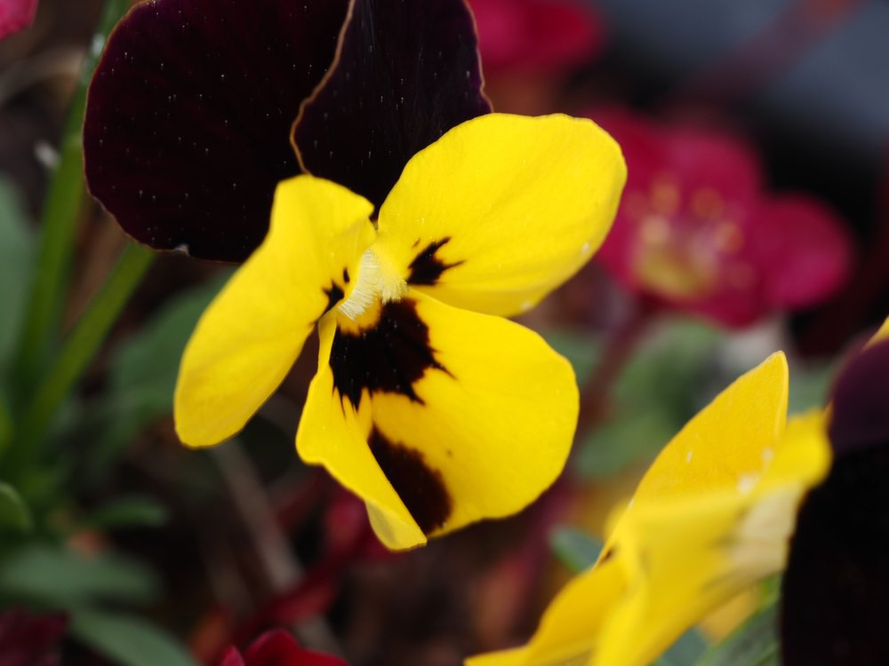

Dreifarbenspiel, Herzstärker und Stammmutter aller Gartenviolen.


Der Nektarführer im UV-Licht
Die dunklen Streifen auf den Blütenblättern sind keine Dekoration – sie sind ein Landestreifen für Insekten. Im UV-Licht sehen Bienen ein klares Muster, das direkt zum Nektar führt. Was für uns wie ein hübsches Muster aussieht, ist für Bienen ein präziser Navigationsplan – die Blüte hat ihn für genau diese Besucher optimiert.
Stammmutter aller Stiefmütterchen
Das Wilde Stiefmütterchen ist die Wildform, aus der im 19. Jahrhundert die bunten Garten-Stiefmütterchen gezüchtet wurden. Die Züchtungsgeschichte dauerte nur wenige Jahrzehnte – aus einer kleinen Wiesenblume wurden riesige, einfarbige Gartenblumen. Die Wildform kann das alles: drei Farben gleichzeitig, robust, winterhart, mehrjährig.
Wissenswertes & Merksätze
Tricolor = dreifarbig
Jede Blüte zeigt violett, weiss und gelb – das Farbspiel variiert je nach Standort und Licht erheblich.
Herzgespann
Im Mittelalter bei Herzrhythmusstörungen eingesetzt – die Flavonoide haben tatsächlich leicht herzwirksame Eigenschaften.
Samen mit Elaiosom
Wie viele Waldpflanzen werden die Samen durch Ameisen verbreitet – Myrmekochorie auch auf der Wiese.